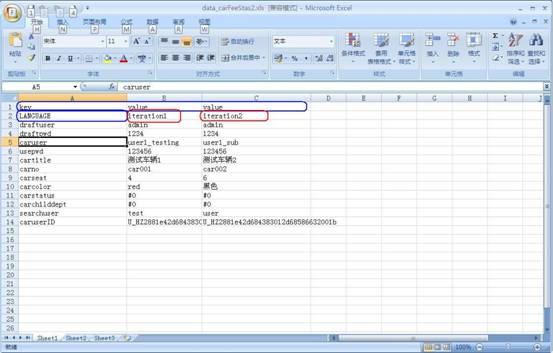

|
 |
 |
|
|
|
在AC上构建多数据循环测试1. AC多数据循环实现原理
AC提供了多种类型的Test Job，目前包括Ant，QTP，Selenium，Java，Junit，WebService。这些Test Job在TestJobFile.xml中有各自特殊的定义描述，也有通用的子附属器（Appender）。例如：
<PreKillProcess name="QTPPro"/> <TestData type="iteration" location="TestData\TestData.xls"/> <JobInput name="$MAIL_SUBJECT"/> <JobOutput name="$NAME" />
- <PreKillProcess>可以实现在本Job运行之前，杀死相关进程。
- <JobInput>和<；JobOutput>是定义本job的输入和输出，它们就像job的接口，本身没有额外的工作，但是AC会在Job运行之前检查JobInput是否准备好（被之前的Job输出过），在Job运行之后检查JobOutput是否被输出过（被当前Job输出）。
- 其中，使用子附属器<TestData>可以实现TestJob的多数据循环。
2. 如何使用
完成多数据循环 以QTP为例，可以做如下TestJob定义（可相同适用于selenium等其他job）。
<QTP name="MultipleIterationTesting" description="demo" iteration="ALL"> <TestData type="iteration" location = "testdata\data.xls"/> </QTP>以上定义，当QTP Job被运行时，首先按照iteration模式加载指定路径下的data.xls，并自动根据数据内容运行所有的循环。在最后的AC hemtl结果报告里会看到每次数据循环为一个新的test。
目前iteration的数据源支持xml和xls两种文件格式。
1) Excel数据源
Excel数据源按如下格式安排：
(1)每一个参数是由key和value组成；
(2)每一列是一个循环，增加一列即增加一个循环。Excel格式如下：

- 蓝色为列头（header），已定义格式，不能变更。
- 红色为iteration名称，用户可以自定义，在运行结果报告里，test将会被命名为job名称+iteration名称。
2) XML数据源
Iteration模式下的XML文件内容格式定义如下：
(1)根节点为<DataPool>；
(2)每一组循环数据以<key>value</key>格式挂在<Data>下，循环的名字由indicator属性指定；(3)多组循环增添多个<Data>节点，但必须key的数目和名字完全相同。 <?xml version="1.0" encoding="UTF-8" ?> <DataPool> <Data indicator="zh_CN"> <lang>zh_CN</lang> <subject>NLS_zh_CN_简体中文网页</subject> <to>mingzhu.niu@oracle.com</to> <body>Body:Test 包括焦点新闻报道，消费热点，娱乐，无线服务，分类目录搜索。</body> <attach>NLS_zh_CN_简体中文网页.txt</attach> </Data> <Data indicator="zh_TW"> <lang>zh_TW</lang> <subject>NLS_zh_TW_繁體中文中國台灣</subject> <to>mingzhu.niu@oracle.com</to> <body>Body:Test 繁體中文中國台灣測試國際化測試報業消費娛樂無限服務</body> <attach>NLS_zh_TW_繁體中文中國台灣.txt</attach> </Data> </DataPool>定义格式详见release中jobschemas定义文件。
3. 指定运行某组数据
如果想指定运行某组数据，则在Job的iteration属性中直接指定indicator的名字，多组数据以"，"分割，比如：
以QTP为例，可以做如下TestJob定义（可相同适用于selenium等其他job）<QTP name="MultipleIterationTesting" description="demo" iteration="zh_CN,zh_TW"> <TestData type="iteration" location = "testdata\data.xls"/> </QTP>4. 常见问题及解决方法
使用excel数据源时，抛出如下异常:
java.lang.NumberFormatException: You cannot get a string value from a numeric cell 2011-01-10 03:28:38 -System at org.apache.poi.hssf.usermodel.HSSFCell.getStringCellValue(HSSFCell.java:775) 2011-01-10 03:28:38 -System at framework.DataSource.ReadExcel.getColumnValues(ReadExcel.java:109)问题原因：
Excel中包含宏或格式化的cell。解决办法:
1)更改所有的cell属性为String类型，取消数据有效性校验
2)将excel中文字copy到记事本，再copy回来，以取消格式化